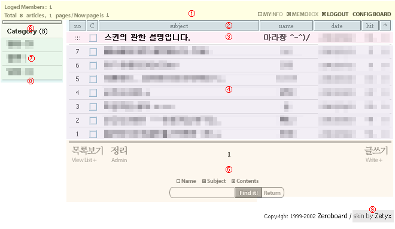
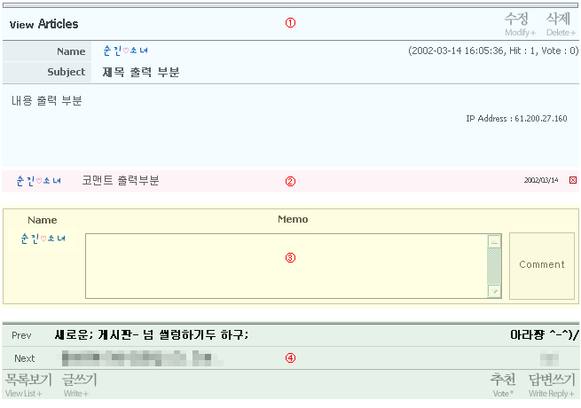

|
일반 스킨 만들기 제로보드는 DB관리 및 회원 기능은 제로보드에서 모두 담당하고 외부출력은 스킨을 이용해서 출력됩니다. 스킨은 제로보드 설치 디렉토리의 skin 디렉토리 내에 있습니다 아래는 제로보드 채널 부운영자인 조아라 양이 만든 간단한 스킨 구조입니다 ▷ 게시판 List 부분  ① setup.php - 상단 (글 수나 로그인, 가입, 쪽지상태등) 을 나타내는 부분. ② list_head.php - no, C, subject, name, date, hit, * 등의 윗 부분. ③ list_notice.php - 공지사항의 list 출력 부분. 보통 글과 차이를 둘수 있도록 되어 있음. ④ list_main.php - 보통 글의 list 출력 부분. ⑤ list_foot.php - list를 다 출력한 다음 마무리 짓는 부분. 글쓰기 등의 버튼과 검색폼도 포함. ⑥ category_head.php - 카테고리 list 의 윗 부분. ⑦ category_main.php - 카테고리 list 출력 부분. ⑧ category_foot.php - 카테고리 list 마무리 부분 ⑨ maker.txt - 스킨 저작권 > skin by 이후 부분. ▷ 게시판 글 출력 부분  ① view.php - 글의 내용을 출력하는 부분. 이름, 메일, 시간 등도 나타냄. ② view_comment.php - 코맨트의 출력 부분. ③ view_write_comment.php - 코맨트 쓰기 부분. ④ view_foot.php - 글 내용 출력 마무리 & 이전글 다음글 버튼 등의 부분. ▷ 그 외의… ① write.php - 게시물 글 쓰기 폼 부분. ② ask_password.php - 글을 삭제하거나 할때 비밀번호를 물어보는 부분. ③ error.php - 에러 출력 부분. ④ login.php - 로그인 폼 부분. ⑤ value.php - 기본적으로 쓰이는 색 지정 부분. ⑥ view_list_head.php - 전체 목록 출력 아닐때 관련(답변)글 목록 출력 부분의 윗 부분. (list_head.php 랑 비슷.) ⑦ view_list_main.php - 전체 목록 출력 아닐때 관련(답변)글 목록 출력 부분. (list_main.php 랑 비슷.) ⑧ view_list_foot.php - 전체 목록 출력 아닐때 관련(답변)글 목록 출력 부분의 마무리 부분. (list_foot.php 랑 비슷.) ⑨ style.css - 전체적인 스타일 시트. ⑩ 그리고 이미지 파일들 ^-^ 그리고 스킨 제작 강의가 매우 잘되어 있는 곳을 알려드리겠습니다 위 사이트에 보시면 제로보드 스킨 제작에 대한 좋은 강의와 자료들이 많습니다 빠른 시간내에 자체적인 스킨 제작 매뉴얼을 만들도록 하겠습니다 |